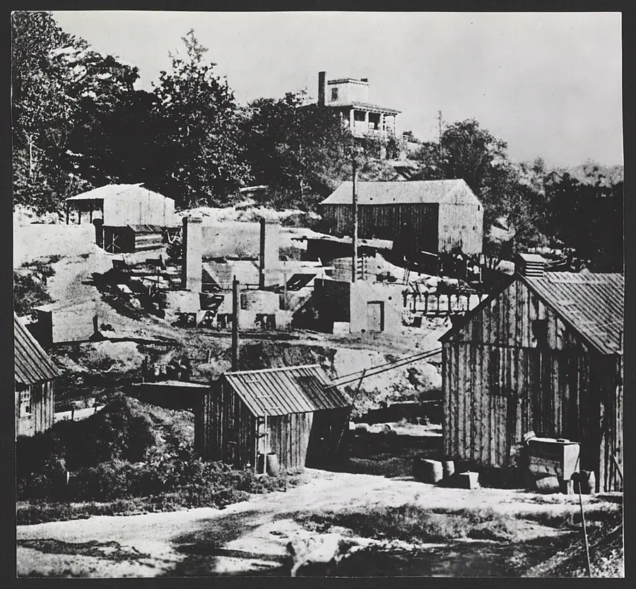
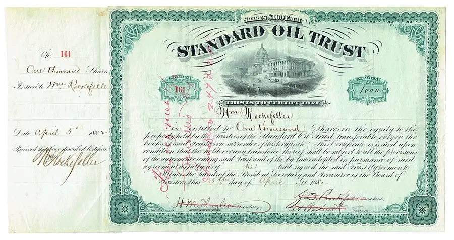
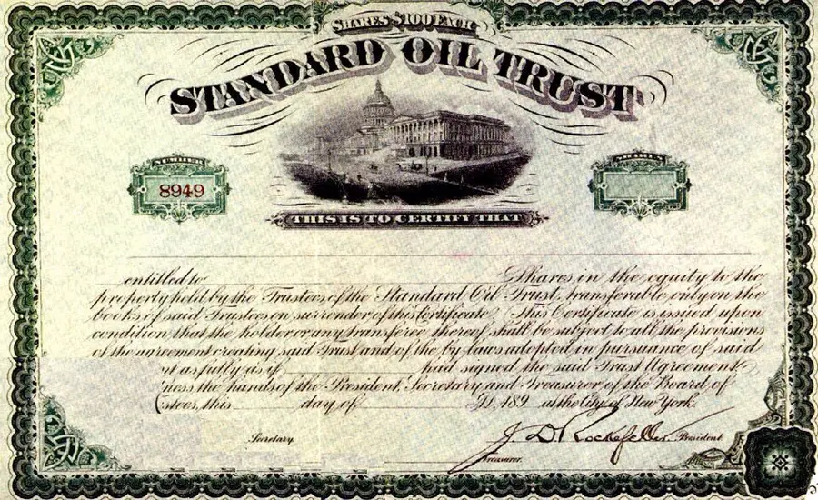
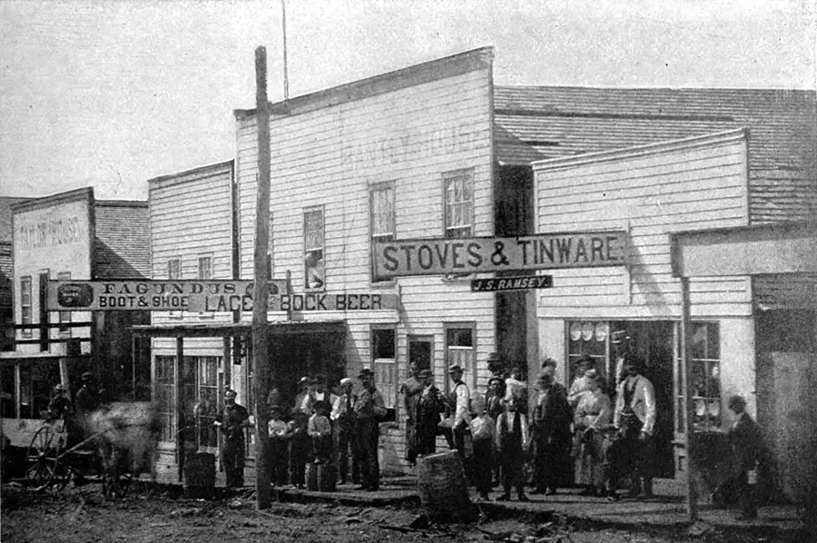

대표 로고대표 브랜드 마크
대표 로고대표 브랜드 마크스탠더드 오일 Standard Oil
스탠더드 오일(Standard Oil)은 석유의 생산, 운송, 정제, 마케팅 분야에서 월등한 영향력을 가진 회사였다. 이 회사는 해체되기 전까지 세계에서 가장 오래된 대형 다국적 기업들 가운데 하나였다.
최종 업데이트
스탠더드 오일은 어떤 브랜드인가
스탠더드 오일은 석유의 생산, 운송, 정제, 마케팅 분야에서 압도적인 영향력을 가졌던 기업이다. 이 회사는 1890년에 미국 내 88%의 시장점유율을 기록하며 시장을 장악했다.
창업자 록펠러는 스탠더드 오일 트러스트를 설립하여 모든 자회사를 통제했다. 하지만 1911년 미국의 반트러스트법 위반으로 인해 34개의 독립회사로 해체되었다.
록펠러는 이 회사를 통해 억만장자가 되었으며, 경쟁사에게 비도덕적인 행동을 했다는 주장도 존재한다.
스탠더드 오일은 어떻게 시작되고 성장했나
스탠더드 오일은 1870년 존 D. 록펠러가 동업자들과 함께 오하이오주 클리블랜드에서 설립했다.
1890년 오하이오주 법원이 셔먼법 위반을 이유로 스탠더드 오일 트러스트를 해산시키자, 록펠러는 본거지를 뉴저지 주로 이전했다. 뉴저지 스탠더드 오일은 미국 전역에 퍼져 있던 스탠더드 오일 그룹 41개사의 지주회사격이었다.
이 회사는 독점을 위해 경쟁사들에게 진로 방해, 가격 인하 등을 통해 경쟁사들을 망하게 하거나 인수했다. 1911년 미국 대법원의 판결에 의해 분리되기 전까지 세계에서 가장 오래된 대형 다국적 기업들 가운데 하나로 성장했다.
스탠더드 오일의 브랜드 아이덴티티는 무엇인가
스탠더드 오일은 석유 산업의 거의 모든 분야에서 독점적인 지위를 확보했던 기업이다. 이 회사는 반독점법에 의해 해체되었으나, 그 후손 기업들이 오늘날까지 존재한다.
스탠더드 오일의 대표 제품과 서비스는 무엇인가
스탠더드 오일은 석유의 생산, 운송, 정제, 마케팅 사업을 핵심으로 영위했다. 이 회사는 석유 사업 전반에 걸쳐 월등한 영향력을 발휘했으며, 미국 내 석유 시장의 대부분을 점유했다.
독점을 위해 경쟁사들을 망하게 하거나 인수했으며, 진로 방해 및 가격 인하 등의 전략을 사용하기도 했다. 이러한 사업 방식은 논쟁의 대상이 되기도 했다.
스탠더드 오일은 지금 어떤 상태인가
스탠더드 오일은 1911년 미국의 반트러스트법 위반으로 인해 34개의 독립회사로 해체되었다. 이 중 저지스탠더드오일은 엑슨으로, 캘리포니아스탠더드오일은 셰브런으로, 뉴욕스탠더드오일은 모빌로 불리게 되었다.
이후 엑슨과 모빌은 합병하여 엑슨모빌이 되었다.
스탠더드 오일 로고는 어떻게 변해왔나
대표 로고대표 브랜드 마크사진으로 보는 스탠더드 오일의 역사




자주 묻는 질문
스탠더드 오일는 어느 나라 브랜드인가요?
스탠더드 오일는 미국의 에너지·산업재 브랜드입니다.
스탠더드 오일는 언제 설립되었나요?
스탠더드 오일는 1870년 설립되었습니다.
스탠더드 오일의 브랜드 아이덴티티는 무엇인가요?
스탠더드 오일은 석유 산업의 거의 모든 분야에서 독점적인 지위를 확보했던 기업이다.
스탠더드 오일의 대표 제품은 무엇인가요?
스탠더드 오일은 석유의 생산, 운송, 정제, 마케팅 사업을 핵심으로 영위했다.
스탠더드 오일는 현재 어떤 상태인가요?
스탠더드 오일은 1911년 미국의 반트러스트법 위반으로 인해 34개의 독립회사로 해체되었다.
스탠더드 오일의 창업자는 누구인가요?
스탠더드 오일의 창업자는 존 D. 록펠러, William Rockefeller, Henry Morrison Flagler입니다(위키데이터 기준).
스탠더드 오일의 본사는 어디에 있나요?
스탠더드 오일의 본사는 클리블랜드에 있습니다(위키데이터 기준).
출처와 검증
스탠더드 오일 관련 참고: 위키데이터 Q375791 · 한국어 위키백과 · 영어 위키백과. 브랜드명은 한글과 원어를 함께 표기하되 데이터에 없는 표기는 만들지 않습니다. 기원 국가·설립연도는 검수된 정의문에서 확인된 값을 우선하고, 없을 때만 공식 웹사이트 URL이 일치하는 위키데이터 개체의 값을 씁니다. 위키데이터 값은 2026-09-12 기준입니다.